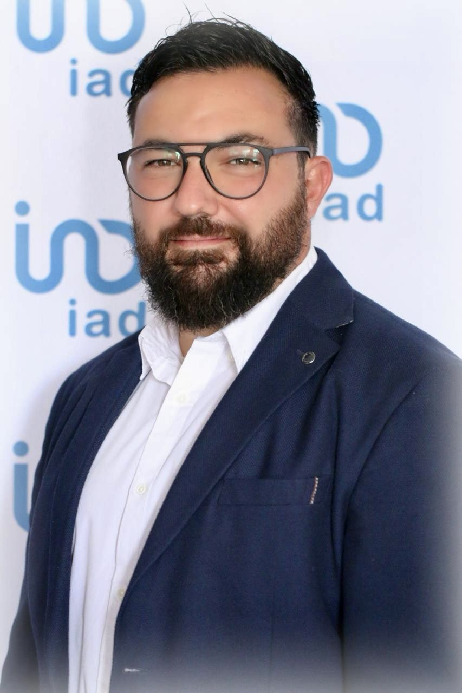

Le métier de mandataire immobilier attire de plus en plus de candidats à la reconversion, mais il traîne encore son lot d'idées reçues. Faut-il un diplôme ? Travaille-t-on seul ? Peut-on vraiment en vivre ? En 2026, beaucoup de ces croyances ne tiennent plus face à la réalité du terrain. Faisons le tri, point par point.
Idée reçue n°1 : « Il faut un diplôme pour se lancer »
C'est sans doute le frein le plus répandu. Pourtant, aucun diplôme immobilier n'est exigé pour devenir agent commercial indépendant rattaché à un réseau de mandataires. Ce qui compte vraiment, c'est la formation initiale et l'accompagnement reçus une fois en activité.
Chez iad, chaque nouveau conseiller suit un parcours de formation complet — cadre juridique, estimation, prospection, négociation — accessible en ligne et sur le terrain. La montée en compétence se fait progressivement, épaulée par un parrain expérimenté. On ne part jamais d'une page blanche.
Ce sont vos qualités relationnelles, votre sérieux et votre régularité qui font la différence, bien plus qu'un diplôme.
Idée reçue n°2 : « Un mandataire, c'est moins sérieux qu'un agent en agence »
Mandataire et agent en agence exercent le même métier, dans le même cadre légal. Le mandataire est un agent commercial immatriculé au RSAC, qui travaille sous l'attestation collaborateur délivrée par le réseau, lui-même titulaire de la carte professionnelle.
La différence ne porte donc pas sur le sérieux ou la légitimité, mais sur le modèle : pas de vitrine physique, des outils 100 % digitaux et une rémunération plus avantageuse. Le client bénéficie du même niveau de service et des mêmes garanties.
Idée reçue n°3 : « On travaille seul, isolé chez soi »
L'indépendance n'est pas synonyme de solitude. Travailler sans agence physique ne veut pas dire travailler seul. Au contraire, l'appartenance à un réseau structure le quotidien et casse l'isolement.
- Un parrain qui transmet ses méthodes et reste disponible
- Une communauté locale de conseillers qui partagent leurs bonnes pratiques
- Des formations, des réunions et des événements réguliers
- Un support juridique et technique en cas de question
Beaucoup de conseillers découvrent même une vie d'équipe plus riche qu'en agence classique.
Idée reçue n°4 : « On ne peut pas vraiment en vivre »
La rémunération d'un mandataire dépend directement de son activité et des ventes réalisées. Dans un réseau de mandataires, le conseiller perçoit une part de commission nettement supérieure à celle d'un agent salarié, ce qui compense largement l'absence de salaire fixe au démarrage.
Les premiers mois servent à construire son portefeuille et sa notoriété locale : la régularité prime sur la précipitation. À cela peuvent s'ajouter des revenus complémentaires en parrainant à son tour de nouveaux conseillers. Vivre de ce métier est tout à fait réaliste, à condition de s'y investir avec méthode.
Idée reçue n°5 : « Le marché est trop concurrentiel »
La concurrence existe, comme dans tout métier attractif. Mais le marché de 2026, porté par la baisse des taux et une demande soutenue, offre de réelles opportunités, en particulier dans le Sud. Les secteurs de l'Aude et de l'Hérault, prisés des retraités et des actifs en télétravail, restent dynamiques.
Sur un marché local, ce qui fait la différence n'est pas le nombre de conseillers, mais la qualité de l'accompagnement, l'ancrage de terrain et la confiance instaurée avec les vendeurs. Un conseiller bien formé et bien entouré trouve toujours sa place.
Envie d'en avoir le cœur net sur le métier ?
Guillaume Roque vous présente sans détour le métier de mandataire, la formation et l'accompagnement de la Tribu Immo, sans engagement.
Échanger avec Guillaume →
130+ conseillers actifs · Présent dans l'Aude, l'Hérault, le Tarn et à l'international